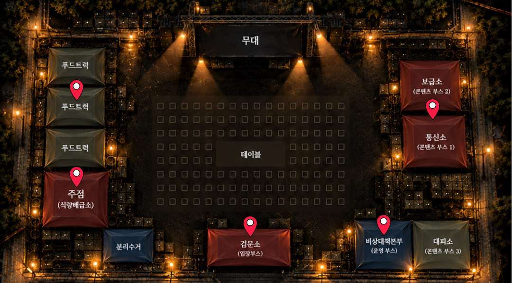

RESTRICTED AREA
미인의 밤
: 버려진 도시 · 2026
현재 당신이 있는 도시는 폐쇄되었습니다.
숨겨진 생존 물자들을 확보하고 생존하십시오.
숨겨진 생존 물자들을 확보하고 생존하십시오.
SURVIVAL RECORD0 / 5
ITEM 01
ROUTE FILE
생존 경로 지도
ACQUIRED
01
01
ITEM 02
WATER SUPPLY
비상 식수
ACQUIRED
02
02
ITEM 03
FLASHLIGHT
휴대용 손전등
ACQUIRED
03
03
ITEM 04
CANNED FOOD
비상 식량
ACQUIRED
04
04
ITEM 05
LIGHTER
휴대용 점화 도구
ACQUIRED
05
05
SUPPLY COLLECTION PROGRESS
ITEM 01 ACQUIRED
ROUTE FILE

첫 번째 생존 물자를 확보했습니다.
생존 경로 지도를 확인하십시오.

ACQUIRED SUPPLIES
확보한 생존 물자
ALREADY ACQUIRED
이미 확보한 생존 물자
해당 생존 물자는 이미 확보되었습니다.
다른 생존 물자를 찾아보십시오.
BLOOD CITY / SUPPLY RECORD
ITEM ACQUIRED
SUPPLY ACQUIRED
LOCATION CONFIRMED
현위치 확인
ALL ITEMS ACQUIRED
ESCAPE AUTHORIZED
모든 생존 물자를 확보했습니다.
비상대책본부로 이동하십시오.